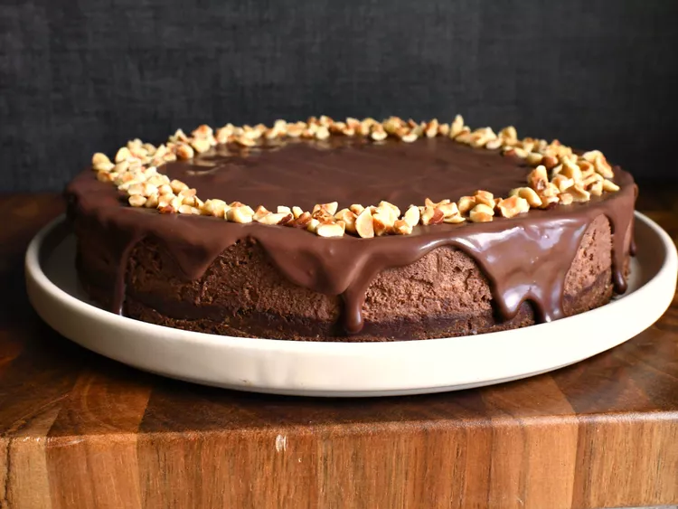

Chocolate-Glazed Hazelnut Mousse Cake

Description
This wonderfully rich, silky dessert is an ideal choice when you're entertaining a group of friends. Featuring a hazelnut shortbread crust that provides a crisp based for the moist, airy mousse, it is simple to prepare, can be made ahead of time, and does not require any last-minute fussing. Nutella -- beloved by Europeans (and by more Americans than admit to it) -- acts as a stealth ingredient that both echoes and enhances the marriage of the crust and the mousse. So whether you find yourself with or without a Valentine this year, it will be love at first bite.
Ingredients
Shortbread Base
- 2 tablespoons hazelnuts, toasted and skins rubbed off
- 3 tablespoons sugar
- ½ cup all-purpose flour
- ¼ cup unsalted butter, softened
- 2 tablespoons unsweetened Dutch-process cocoa powder
- ⅛ teaspoon salt
Mousse
- 1 teaspoon unflavored gelatin
- 3 tablespoons cold water
- ½ cup chocolate hazelnut spread such as Nutella
- ½ cup mascarpone
- 1 ½ cups chilled heavy cream
- 2 tablespoons unsweetened Dutch-process cocoa powder
- 3 tablespoons sugar
Ganache
- 5 tablespoons heavy cream
- 3 ½ ounces fine-quality bittersweet chocolate (not unsweetened), chopped
Steps
- For shortbread base: Put oven rack in middle position and preheat oven to 350 degrees F. Invert bottom of springform pan (to make it easier to slide shortbread base off bottom), then lock on side of pan and line bottom with a round of parchment paper.
- Pulse hazelnuts with sugar in a food processor until nuts are finely chopped. Add flour, butter, cocoa, and salt and pulse just until a dough forms.
- Press dough evenly onto bottom of springform pan with your fingers. Prick all over with a fork, then bake until just dry to the touch, about 18 to 20 minutes. Transfer base in pan to a rack to cool completely, about 30 minutes. Remove side of pan and carefully slide out parchment from under shortbread, then reattach side of pan around shortbread base.
- Make mousse while shortbread cools: Sprinkle gelatin over water in a 1- to 1 1/2-quart heavy saucepan and let stand until softened, about 5 minutes. Heat gelatin mixture over low heat, stirring, just until gelatin is melted, about 2 minutes. Whisk in chocolate hazelnut spread until combined and remove from heat.
- Whisk together mascarpone and chocolate hazelnut mixture in a large bowl. Beat together cream, cocoa powder, and sugar in another large bowl with an electric mixer at low speed until just combined, then increase speed to high and beat until cream just holds soft peaks. Whisk one third of whipped cream into mascarpone mixture to lighten, then fold in remaining whipped cream until well combined. Spoon filling onto shortbread base in pan, gently smoothing top, then chill, covered, at least 3 hours.
- Make ganache and glaze cake: Bring cream to a simmer in a small heavy saucepan and remove from heat. Add chocolate and let stand 1 minute, then gently whisk until completely melted and smooth. Transfer ganache to a small bowl and cool, stirring occasionally, until slightly thickened but still pourable, about 20 minutes.
- Run a warm thin knife around inside of springform pan, then remove side. Slide cake off bottom of pan and transfer to a serving plate. Pour ganache onto top of cake and spread, allowing excess ganache to drip down sides.